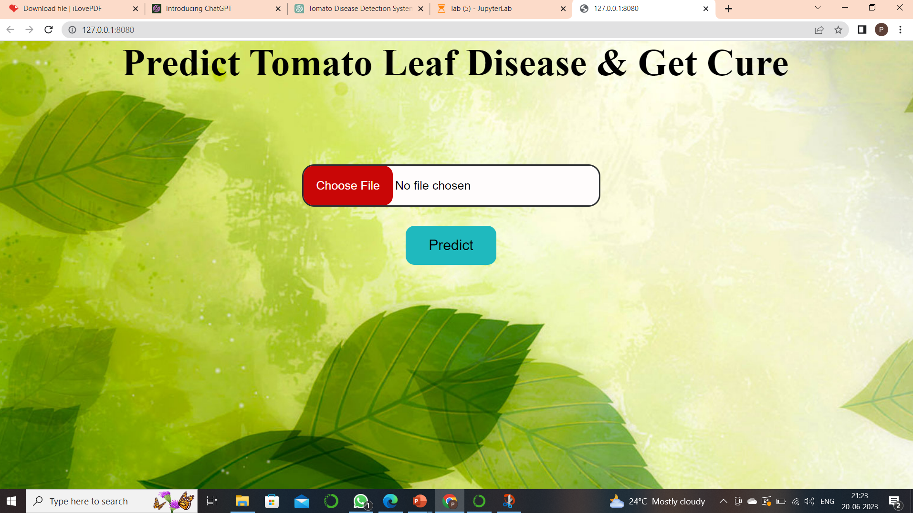

TOMATO LEAF DISEASE DETECTION USING CNN

DETAILED INFORMATION ABOUT PROJECT
- Built a macine learning model using CNN algoritm
- Here we have datasets from kaggle websites and its been dividded into 3 sets(test,train and validation).
- Model as 97% accuracy for disease detection and treatment description also given for te same
- For UI part made use flask(the above picture)